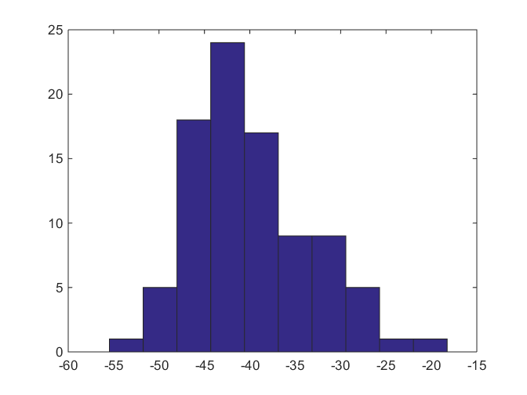

getsolution
Extract parameter(s) from moment tensor solution output cell array
Contents
Syntax
[parameter_value1, ..] = getsolution(Solution, solutiontype, parameter_name1, ...)
Description
Use getsolution to extract seismic moment tensor solution results from multiple seismic events at once.
Examples
Perform moment tensor inversion for 90 events using the sample data located in /examples directory:
Solution = focimt('./examples/example3.txt');
The resulting Solution cell array contains 90 elements corresponding to 90 earthquake moment tensors calculated. Now, to access the results of a particular moment tensor inversion we have to use indexing operator, e.g.:
Solution{5}.full
ans =
Type: {'N'}
STATION_ID: 0
ISO: -41.123
CLVD: -31.527
DC: 27.35
M0: 5.6378e+14
MT: 7.3059e+14
M0ERRMAX: 2.4521e+13
MW: 3.8041
P: [329.94 58.774]
T: [154.38 31.15]
B: [63.19 1.9677]
F1: [62.706 76.178 -92.026]
F2: [251.13 13.967 -81.821]
Fault: {'NF'}
MXX: [1x6 double]
CXX: [1x6 double]
RMSERROR: 0.33807
Station: {1x14 cell}
UMEASURED: [1x14 double]
UTH: [1x14 double]
provide us with results of FULL moment tensor inversion for the 5th seismic event.
Consider a scenario when the user wants to extract values of isotropic component from full moment tensor for all events in bulk. This can be easily achieved by using the getsolution function:
ISO = getsolution(Solution,'full','ISO');
This will result in a vector composed of 90 elements where each element corresponds to the amount of ISOTROPIC component from all 90 earthquakes for which the full seismic moment tensor was calculated. This can be used for plotting the statistics of various parameters for the inverted dataset, e.g.:
hist(ISO)
% display the distribution of isotropic components in the analyzed dataset.
 More parameters can be extracted in at once. For example, to extract moment magnitude and orientation of P axes for DEVIATORIC moment tensor solutions, the following code may be executed:
[MW,P] = getsolution(Solution,'deviatoric','MW','P');
It is important to note that the order of input parameters ('MW','P' in the example above determines the order of output parameters localted on the left side of the formula. Also, the names of input parameters to extract must correspond to the names of variables in the structure array.
The function may be also used to extract general output data outside of 'full', 'deviatoric', and 'dc' structures inside of each cell array element. For example, the general data contains the ID number of events:
Solution{1}
ans =
event_id: '004-03781'
n_trials: 1
calculation_dt: 7.3628e+05
full: [1x1 struct]
deviatoric: [1x1 struct]
dc: [1x1 struct]
To extract all ID numbers, the following code may be used:
ids = getsolution(Solution,'deviatoric','event_id');
In this case, the second parameter ('deviatoric') is of no used, but still it must be set up to either 'full', 'deviatoric', or 'dc'.